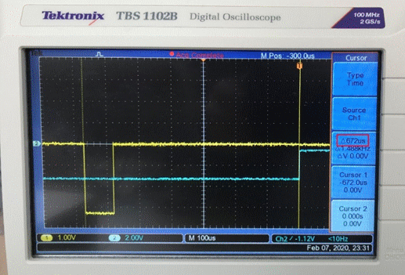
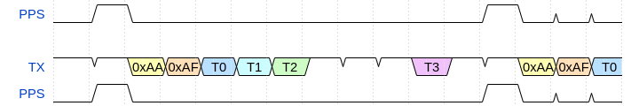
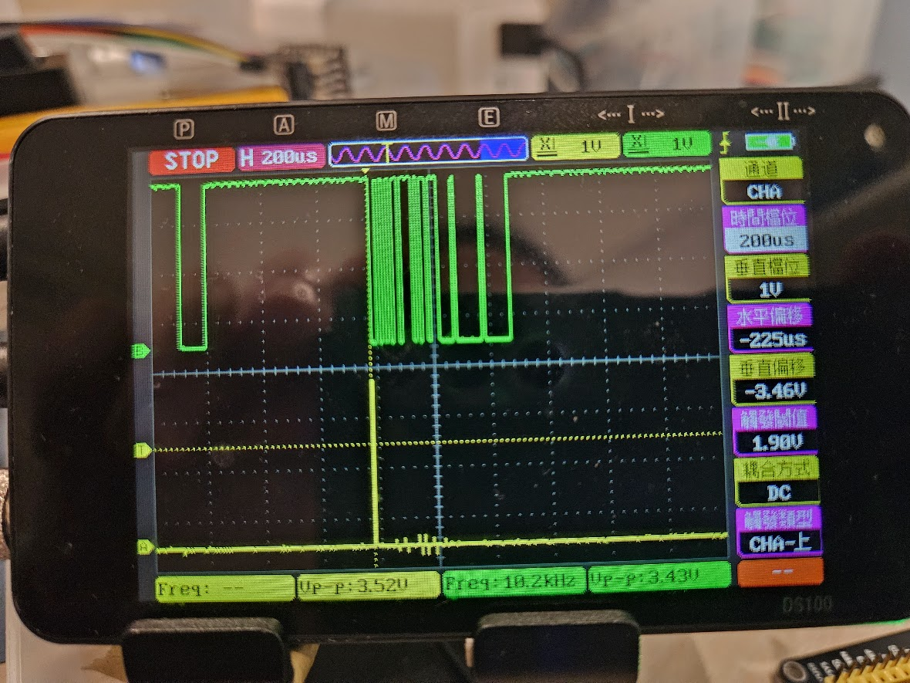
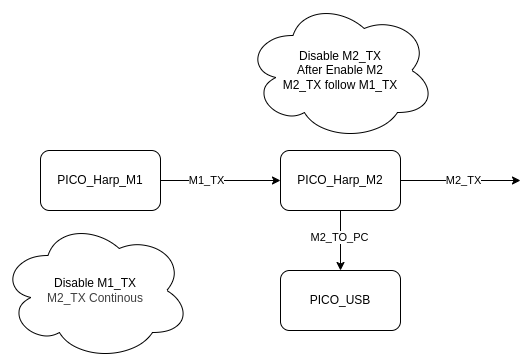
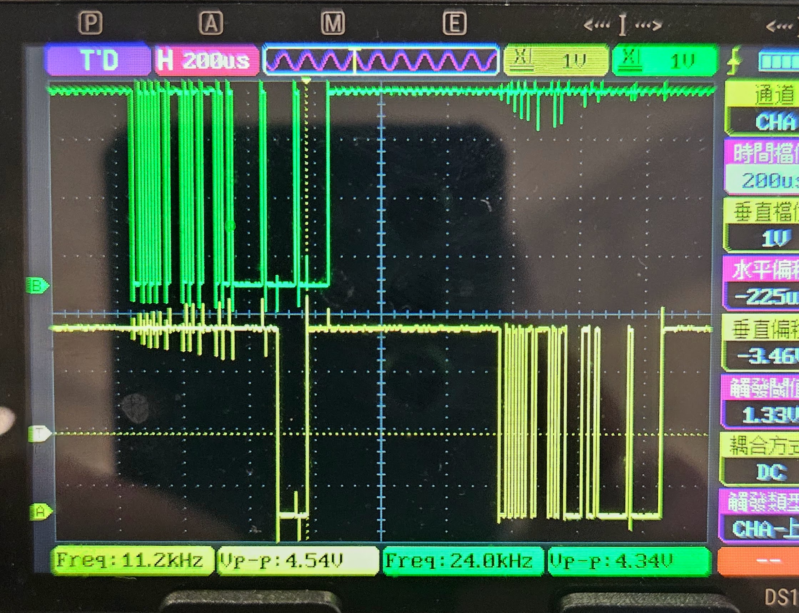
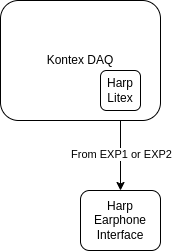
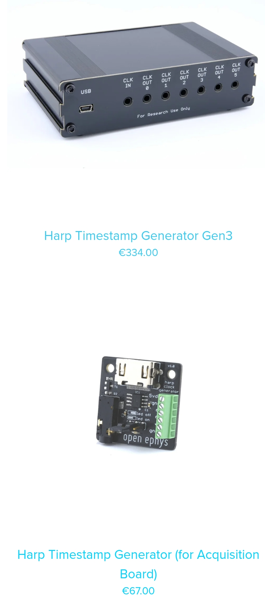

What is Harp
Harp Synchronization Clock Protocol
Introduction
The Harp Synchronization Clock is a dedicated bus that disseminates the current time to/across Harp devices. It is a serial communication protocol that relays the time information. The last byte in each message can be used as a trigger, and allows a Device`` to align itself with the currentHarp` time.
Serial configuration
- The Baud rate used is 100kbps;
-
The last byte starts exactly 672 us before the elapse of the current second (e.g.:)

-
The packet is composed of 6 bytes (
header[2]andtimestamp_s[4]): header[2] = {0xAA, 0xAF)timestamp_sis of type U32, little-endian, and contains the current second.
Example code
Example of a microcontroller C code:
ISR(TCD0_OVF_vect, ISR_NAKED)
{
if ((*timestamp_byte0 == 0xAA) && (*timestamp_byte1 == 0xAF)) reti();
if ((*timestamp_byte1 == 0xAA) && (*timestamp_byte2 == 0xAF)) reti();
if ((*timestamp_byte2 == 0xAA) && (*timestamp_byte3 == 0xAF)) reti();
switch (timestamp_tx_counter)
{
case 1:
USARTD1_DATA = 0xAA;
break;
case 2:
USARTD1_DATA = 0xAF;
break;
case 4:
USARTD1_DATA = *timestamp_byte0;
break;
case 6:
USARTD1_DATA = *timestamp_byte1;
break;
case 7:
USARTD1_DATA = *timestamp_byte2;
break;
case 1998:
USARTD1_DATA = *timestamp_byte3;
break;
}
}
Timing

Timing use PICO Emulation

Physical Connection Schematics


Harp Test


Addon for DAQ

Harp Device need for Test

What are the limitations of increasing the frequency beyond 1Hz for PPS signals
The limitations of increasing the frequency beyond 1 Hz for PPS signals primarily relate to signal shape, timing accuracy, propagation effects, hardware complexity, and pulse distortion:
- Pulse shape and duty cycle ambiguity: PPS signals at 1 Hz are usually short pulses with sharply defined edges to precisely mark second boundaries. Increasing frequency means pulse widths and separation shrink, possibly turning the signal into something closer to a square wave or continuous periodic waveform, which can blur the definition of distinct timing edges important for synchronization^1.
- Increased pulse distortion and rise time issues: Higher frequency pulses have faster rise times and shorter durations, making them more susceptible to distortions when transmitted over cables. Dispersion, attenuation, impedance mismatches, and cable length affect the pulse shape and timing delay more severely at higher frequencies, thus degrading timing precision^4.
- Measurement and detection uncertainty: Timing devices rely on clear, stable pulse edges to trigger time measurements. Faster pulses from higher frequency signals increase uncertainties in detection due to limited bandwidth, noise, and trigger thresholds, worsening jitter and reducing synchronization quality^4.
- Hardware and distribution challenges: Generating and distributing high-frequency pulses with ultra-low jitter and minimal distortion over long distances requires expensive, specialized hardware and careful design. 1 Hz PPS signals are simpler and more robust for typical synchronization scenarios^2.
- Loss of well-defined absolute timing boundaries: The main advantage of 1 Hz PPS is that each pulse corresponds to an exact whole second boundary, facilitating phase alignment of clocks. At higher frequencies, while more timing points may be generated, the direct correlation with absolute second boundaries becomes less clear, complicating protocols that rely on these markers.
In essence, increasing frequency beyond 1 Hz for PPS-type signals tends to increase system complexity, degrade pulse integrity and timing accuracy, and reduce the clarity of the timing reference that makes 1 PPS signals highly effective for synchronization applications such as GPS timing, network clocks, and telecom networks^1.
If needed, systems requiring finer resolution within each second typically use a combination of stable local high-frequency clocks disciplined by the 1 Hz PPS signal rather than replacing PPS with higher frequency pulses directly^2.